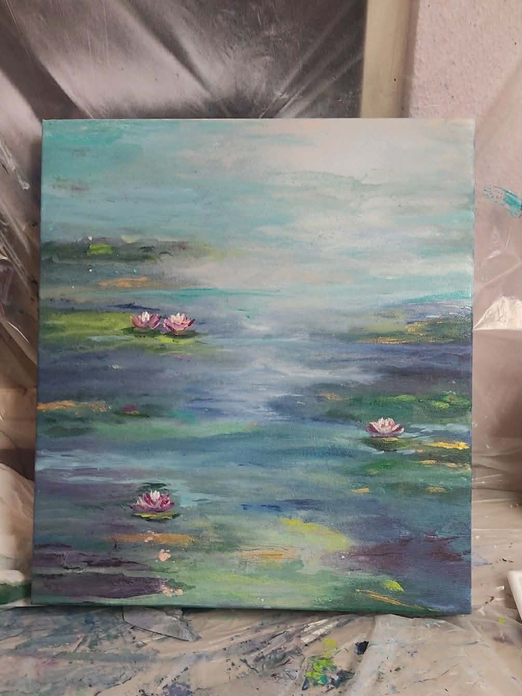
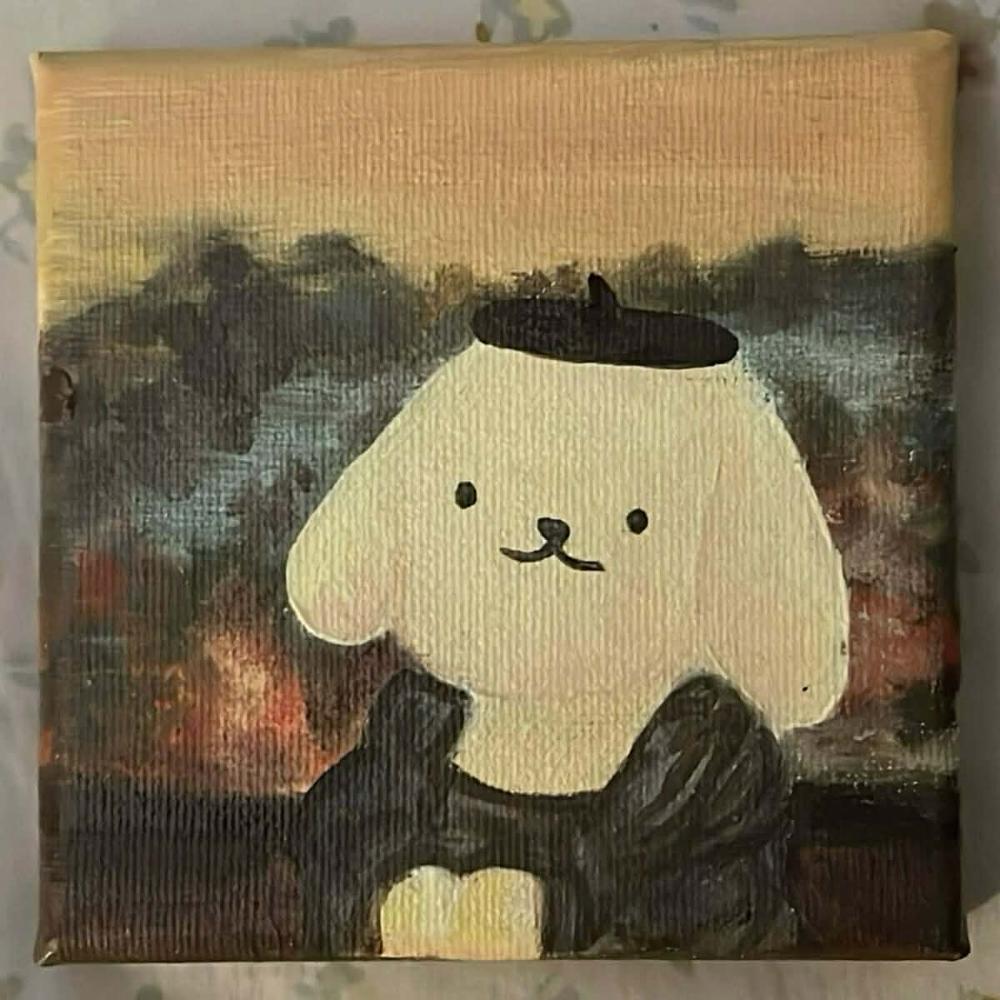
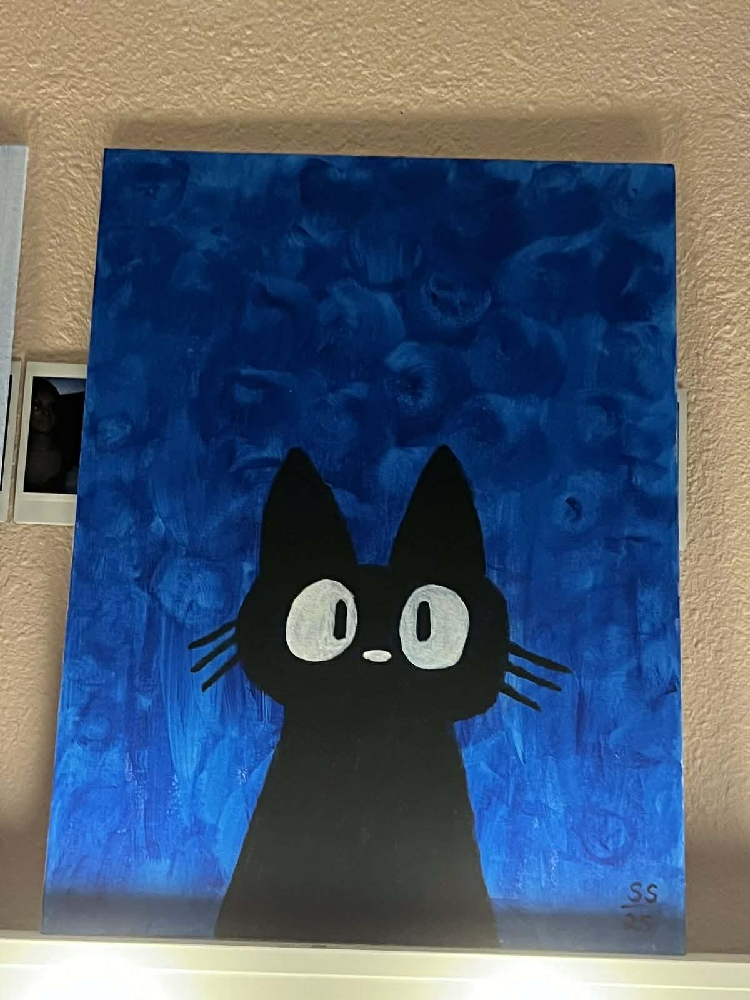
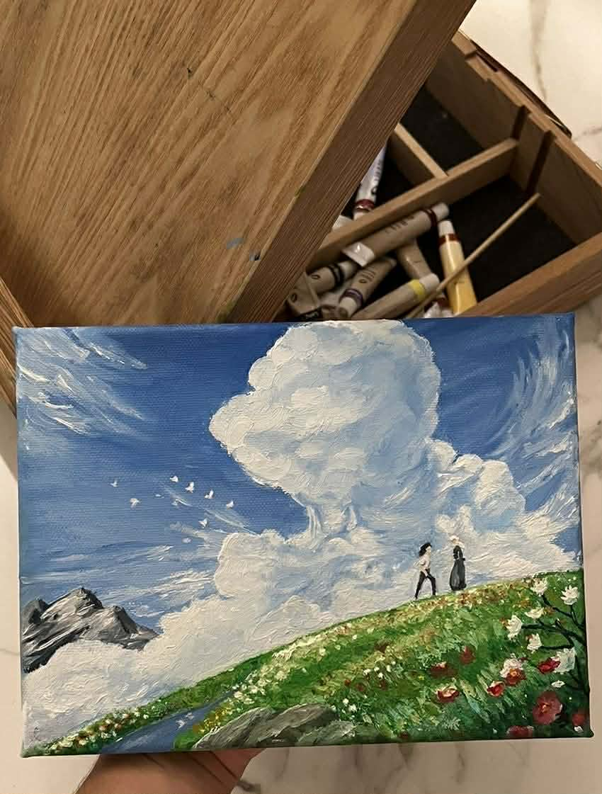
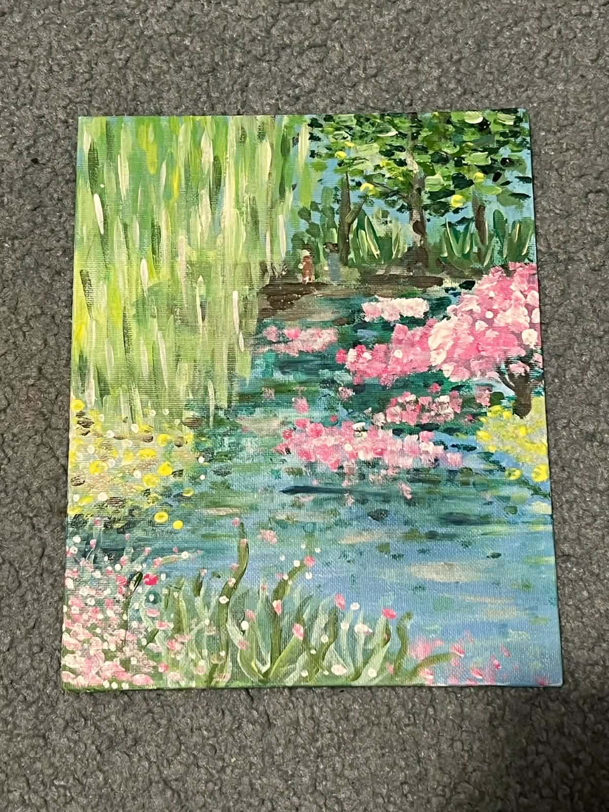
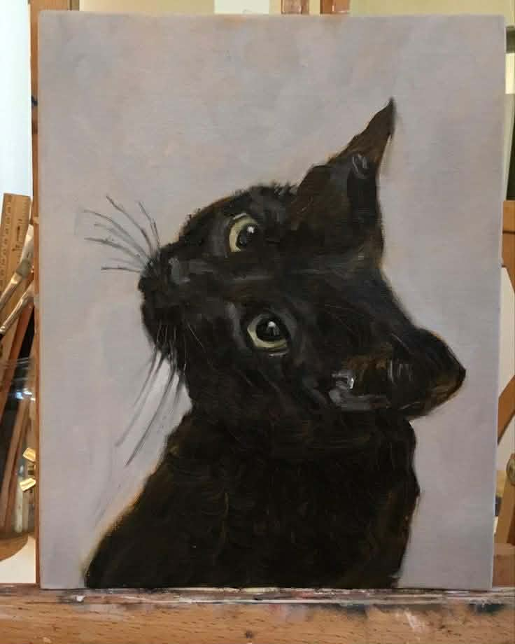

HERE ARE THEN PAINTINGS THAT ARE AVAILABLE FOR THIS MONTH:

Whispers on the Lily Pond
₱3000
Lilies drift on still waters, whispering soft light and quiet dreams inspired by Claude Monet.

Golden Gaze
₱1500
Pompompurin sits in timeless poise, where gentle nostalgia meets quiet elegance.

Curious Midnight
₱1000
A small black cat peers wide-eyed into the night, carrying innocence and playful wonder in every line.

Where the Wind Holds Our Dreams
₱5000
Rolling hills beneath endless clouds echo a cinematic moment from Howl's Moving Castle, filled with longing and quiet magic.

Reflections in Bloom
₱2500
Petals float on mirrored waters, trembling softly in a garden painted with the hush and romance of an impressionist dream

Silent Companion
₱3500
A dark-furred cat gazes with luminous eyes, capturing warmth, mystery, and the quiet presence of a cherished friend.